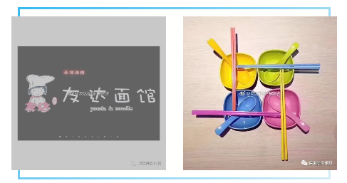
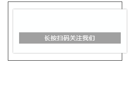

[慢生活] 疯狂打call!友达面馆！一个人不孤单，保定这家店，一人食也能很漂亮！
 不知道大家有没有在微博上看见一个面馆和一个酸菜鱼面呢，面上可以加各种东西，面筋，油条，鱼豆腐，娃娃菜，大肉块。。。今天，我们就来和大家介绍一下这个面馆吧！
他在保定有三家店，分别是：
七一路翠园街路口，北行100米路东，东廉良小区底商（总店），
军校街与五四东路路口东行300米路南，东方家园底商。（河大店）
恒祥南大街与天威路交叉口北行100米路东。淮军公所底商。（体育场店）
今天我们去到的是友达面馆的总店，因为忘记拍照了就和大家形容一下店面吧是一个两层的店，一楼只有一个牌子，写着吃面上二楼，上二楼之后就可以看见一个装修得很温馨的小店，营业人员很热情，不过有一个主意事项：只有预约了才可以吃到酸菜鱼面哦！
点单之后上面还是很快的，十多分钟，一碗热腾腾的面条就上来了
面很香，要的微辣，不能吃辣的同学还是要微微辣或者不辣比较好，因为他家的辣椒还是有点辣的，面很劲道，汤特别鲜，有酸酸的酸菜味和很棒的鲜味，泡出来的油条和面筋贼好吃。鱼片很嫩，没有鱼腥味，很鲜，几乎没有刺。面条的量很大的，两个人完全没有任何问题，大家快去试试吧！！
